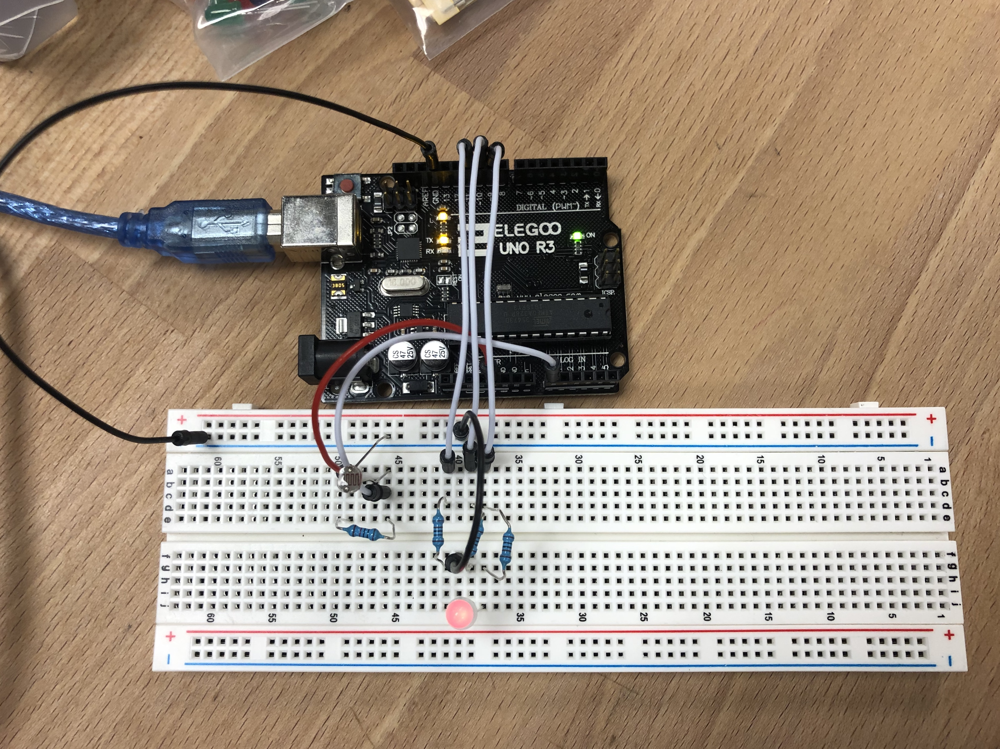
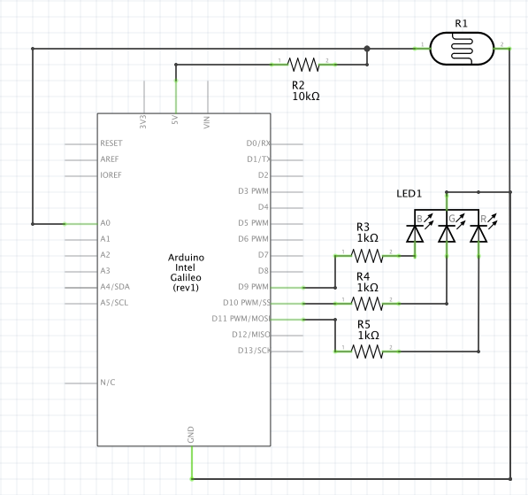
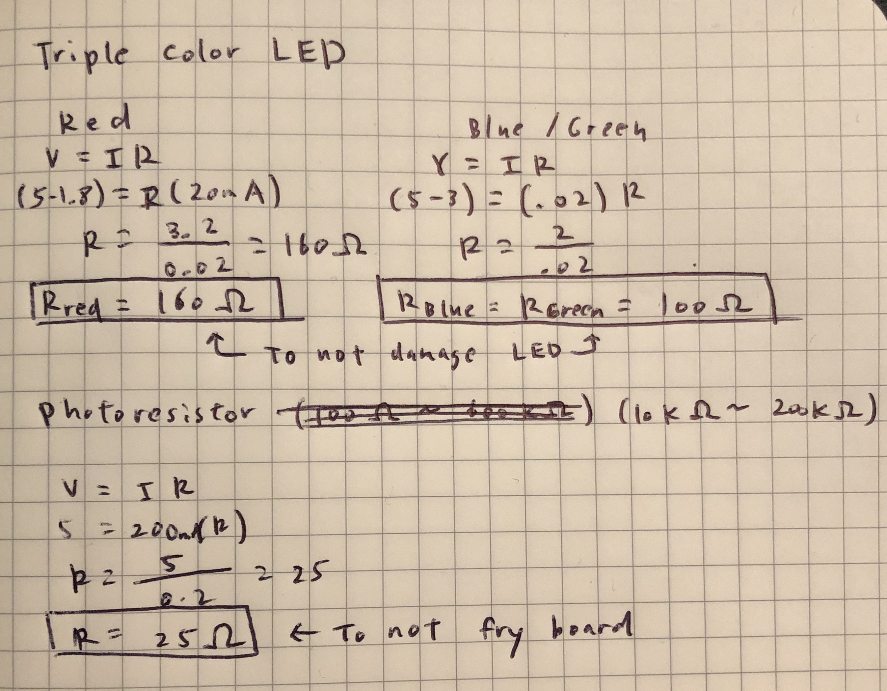

Yuki Asakura's Assignment 3!

Circuit Operation. The color of the LED changes based on the amount of light hitting the sensor.

Circuit board
// These constants won't change
const int analogInPin = A0; // Analog input pin that the photoresistor is attached to
const int redPin = 11; // Analog output pin that the red is connected to on the multi-color LED
const int greenPin = 10; // Analog output pin that the green is connected to on the multi-color LED
const int bluePin = 9; // Analog output pin that the blue is connected to on the multi-color LED
int sensorValue = 0; // value read from the photoresistor
int outputValue = 0; // value output to the PWM (analog out)
void setup() {
Serial.begin(9600); // initialize serial communications at 9600 bps:
pinMode(analogInPin, INPUT); // set analogInPin A0 as an input
pinMode(redPin, OUTPUT); // set redPin 11 as an output
pinMode(greenPin, OUTPUT); // set greenPin 10 as an output
pinMode(bluePin, OUTPUT); // set bluePin 9 as an output
}
void loop() {
// read the analog in value:
sensorValue = analogRead(analogInPin);
// map it to the range of the analog out:
outputValue = map(sensorValue, 100, 600, 0, 255);
// change the LED color to red if the sensor Value is lower than 200 (brightest)
if (sensorValue < 200) {
analogWrite(redPin, outputValue); // map redPin to the output Value
analogWrite(greenPin, 0); // set greenPin to value 0
analogWrite(bluePin, 0); // set bluePin to value 0
Serial.println("Red!"); // print "Red!" to the serial monitor
}
// change the LED color to green if the sensor Value is between 200 and 400 (medium brightness)
if (sensorValue >= 200 && sensorValue <= 400) {
analogWrite(redPin, 0); // set redPin to value 0
analogWrite(greenPin, outputValue); // map greenPin to the output Value
analogWrite(bluePin, 0); // set bluePin to value 0
Serial.println("Green!"); // print "Green!" to the serial monitor
}
// change the LED color to blue if the sensor Value is greater than 400 (darkest)
if (sensorValue > 400) {
analogWrite(redPin, 0); // set redPin to value 0
analogWrite(greenPin, 0); // set greenPin to value 0
analogWrite(bluePin, outputValue); // map bluePin to the output Value
Serial.println("Blue!"); // print "Blue!" to the serial monitor
}
// wait 2 milliseconds before the next loop for the analog-to-digital
// converter to settle after the last reading:
delay(2);
}
Code Snippet

Schematic

Based on the 1.8V drop of red LED lights and 3.0V drop of green/blue LED Lights, a minimum of 160Ω and 100Ω is needed to keep the LEDs from damage respectively. I used 1kΩ resistors for all 3 to keep them operating at a safe amperage.
Considering that the range of resistance can vary from 0.2mΩ to 11kΩ for the variable photoresistor (datasheet here), it is essential to have an additional resistor to prevent short circuiting. While the minimimum resistance needed to prevent the board from frying is 25Ω, I used a 10kΩ resitor just to be safe.